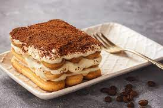

Simple Tiramisu Recipe

Description
Tiramisu is a classic Italian dessert that perfectly combines coffee-soaked ladyfingers with creamy mascarpone. This simple recipe captures the essence of this beloved treat, making it easy to whip up at home. With just a few ingredients and minimal effort, you can indulge in a delightful slice of heaven that’s sure to impress!
Ingredients
- 3 egg yolks
- 1/4 cup white sugar
- 2 teaspoons vanilla extract
- 2 cups mascarpone cheese
- 1 package ladyfingers biscuits
- 1 1/2 cup coffee
- 2 tbsp cocoa powder
Steps
- In a medium bowl, beat yolks, sugar, and vanilla until smooth and light yellow. Fold mascarpone into yolk mixture. Set aside.
- Dip ladyfingers briefly in coffee and arrange 12 of them in the bottom of an 8x8-inch dish. Spread half the mascarpone mixture over ladyfingers. Repeat with remaining ladyfingers and mascarpone. Cover and chill 1 hour. Sprinkle with cocoa just before serving.